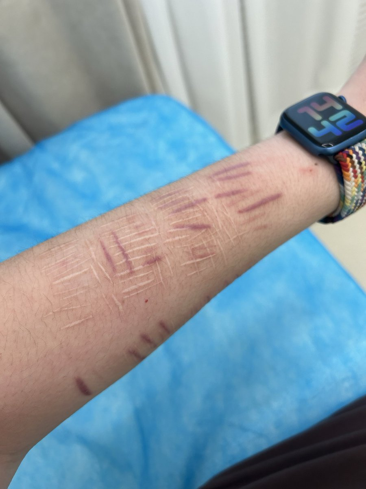
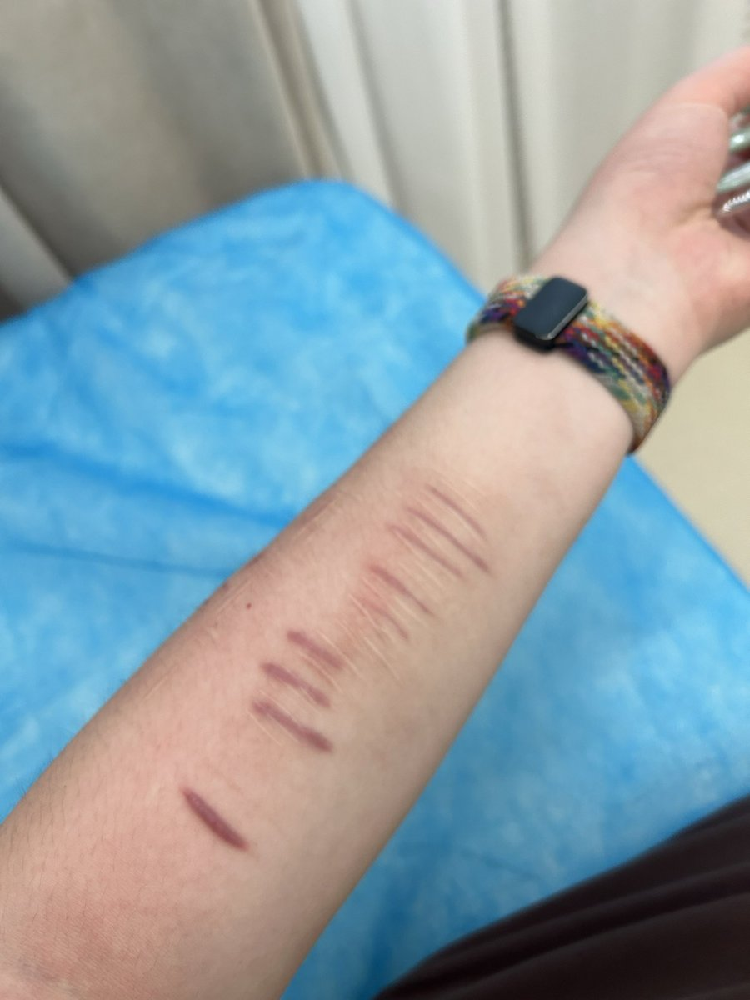
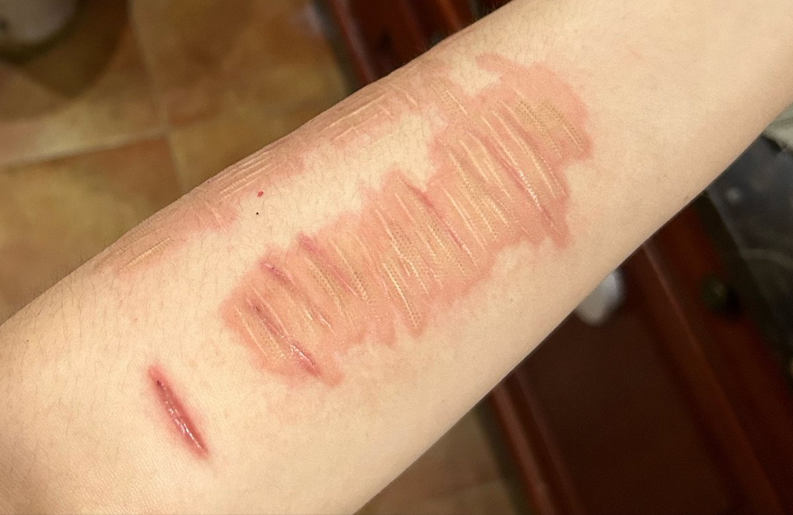
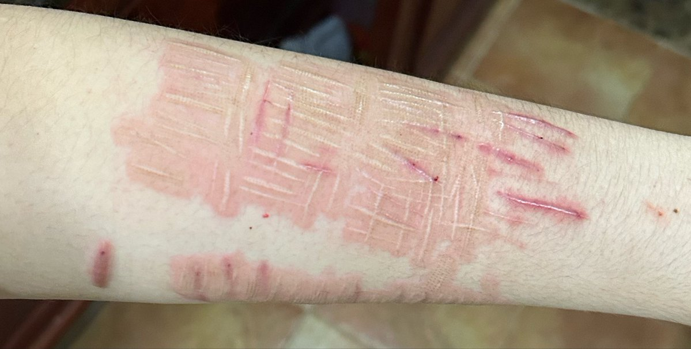

VVV从头再来
@Idontselldrug
@Quetiapinesleep 你用没用过那个疤克，听说挺好用的。如果是我我会用bpc157试试，但我可能太魔怔了




Quetiapine 锈锈
@Quetiapinesleep
p1p2是手臂上的疤痕
p3p4是今天做完第一次激光除疤之后的样子，一些增生多的地方也打了软化的药物。
我回国的时间估计只能做两次
-6000rmb 哭
紫残成本好高 https://t.co/Ff5WnUQ7I1